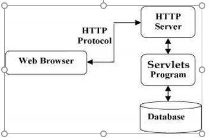
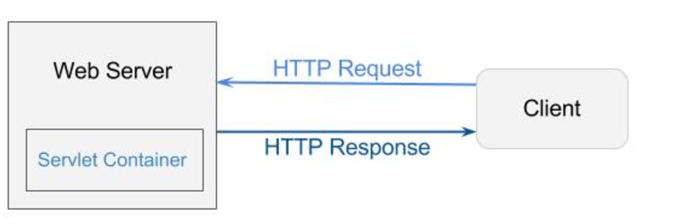

Server-side scripts are technique used by back-end web developers for web development which uses scripts on the web server side and make responses to client’s side depending on the request to the web server on the website. These scripts can be written in different server-side programming languages, such as PHP, Python, C#, C++, Java and Erlang. These languages are used for the communication of the server, client and database. Server-side scripting is used in many ways such as: for customizing interface for the client; hide source codes; Facilitates the transferring of data into the browser; controls on what to share on applications.
Examples of Server Side Scripting
Java Web Application In Netbeans in creating a web services you can either
What is Java Servlet?
It is used for building Web-based application which provides a component-based and platform-based method without the performance limitations of CGI programs. It has access to all Java API including the JDBC API to access enterprise database. It acts as a middle layer between a request coming from a Web browser or other HTTP client and databases or even an application on the HTTP server.

It provides the runtime environment for JavaEE application. It is used for dynamically generate web pages in server side. It part of the server side that interacts with the servlet for handling the dynamic web pages form the client.
It is used for dispatching request to another resource in HTML, servlet or JSP. It provides two methods:
It is used for creating web application just like Servlet. It consists of HTML tags and JSP tags.
Types of Directives
declares one or more variable or methods that can be used in Java code in the JSP FILE.
HTTP is a stateless protocol, it means every time a client retrieves a web page, it opens separate connection to the web server and the server doesn’t keep any record of the client’s request.
COOKIES
Similar to other input fields but these fields are not displayed on the page and its value is sent as other input fields.
It is an approach in which a session identifier gets appended with each request URL that helps the server identify the user session.
It is a representation of the user’s session. It is available in all request and attributes stored in HTTP session in will be available in any servlet or in a JSP.
“Java Server Page,” developed by Sun Microsystems in 1999. It is a technology that controls the content or interface of Web pages through the use of the Java Servlet. JSP are pretty similar to ASP and PHP, but it does use of the Java programming language. To deploy and run the server, they use a servlet container such as Apache Tomcat, Glassfish or Jelly. JSP is useful in developing and maintaining dynamic Web pages, and accessing database on the Web server.
@WebServelet container
@WebServlet(name = “Hello Servlet”, urlPatterns = (“/HelloServlet”)
getInputStream() – Servlet Input Stream
getOutputStream() - Servlet Output Stream
@Override
protected void doPost(HttpServletRequest request, HttpServletResponse response)
throws ServletException, IOException { }
Portimage = request.getPart(“image”) – get the name
set/ get Atribute
request.setAttribute(“productlist”, productList);
request.setAttribute(“productlist”);
PHP “Hypertext Preprosessor” and was originally called “Personal Home Page” is a server scripting language that free and widely used by web developers. Developed by Rasmus Lerdorf in 1994. It is used for developing interactive and dynamic web pages that uses general-purpose programming language.
<form action = “x.php” method = GET>
<input type = “text” name = “user”
<input type = “submit”>
</form>
isset function
isset ($_GET[‘user’]
Variable starts with a dollar sign ($) and followed by the name of the variable. Variable name is case-sensitive.
Built-in variables that are always available in all scopes.
Node.Js a free asynchronous cross-platform JavaScript run-time environment used for developing server-side web pages, designed to create scalable network applications. It is also used for developing dynamic web pages in the server-side. Developed in 2009 by Ryan Dahl. It collects “modules” for file system IO, data streams, networking, binary data that handles core functionalities. Functions of Node.JS are designed that when input script was been executed, it just simply enters the loop because it is designed non-blocking.
Monggo DB
Express JS
Angular framework
Node.JS
BJON - Binary JSON format
API Node.JS Features
index.js(simple webserver)
var http require (‘http’)
var server = http.createServer();
server.on(‘request handler’);
function handle(request, response) {
response end(hello, nodeJs!!);
}
function handler (request, response) {
var method = request.method;
var url = request.url;
var headers = request.headers;
console.log(‘Request Method: ${method}’);
console.log(‘Request URL: ${url}’);
console.log(‘Request Headers: \n ${JSON.String}’);